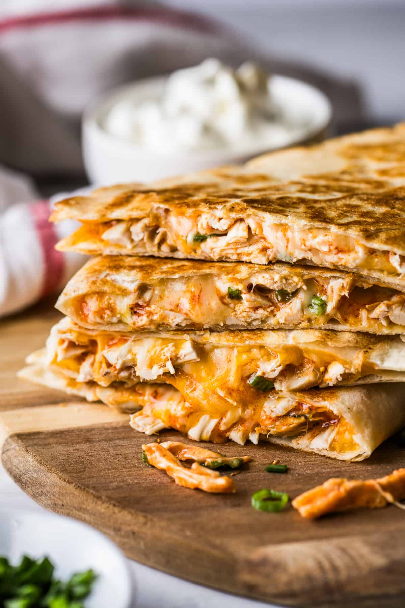

Chicken Quesadilla

Description
This classic mexican dish is cheesy and filled with delicious chicken!
It is relatively simple to make, but be prepared to spend some time making it.
The majority of the time will be to gathering the proper ingredients, which are essential
for the dish. Once they are all there, making a quesadilla just requires cooking on a skilled top.
This recipe is subjective and depending on how done you want your quesadilla, you can cook it for
a shorter or longer time than described in this recipe. The quesadilla from this recipe will look
very similar to the one from this picture.
Ingredients
- Rotissirie Chicken or Cooked Chicken Breast
- Shredded Cheese
- 10 inch tortilla
- A small amount of butter
- A couple of pinches of paprika
- Optional for spiciness: Chipotle Ranch Salsa
Steps
- Slice the chicken into bite-sized pieces
- Get about a bowl-full of shredded cheese
- Using a skillet and a stove-top, turn on the stove top to
a medium to high temperature setting
- When the skillet is hot, rub the butter all over the pan
- Put the tortilla in the skillet and let it cook for around 1 minute
- Flip over the tortilla and spread the shredded cheese
you have across the tortilla
- Add the cut-up chicken on one side of the tortilla
- Add the paprika flakes on the chicken
- Once the cheese has melted, use a spatula to put the half of
the tortilla without chicken onto itself
- Keep flipping the quesadilla until the tortilla is dark brown
- Remove from the skillet, and cut up into three pieces
- If using chipotle ranch salsa, pour it in a separate bowl
to use as dipping sauce for the chicken quesadilla
Homepage